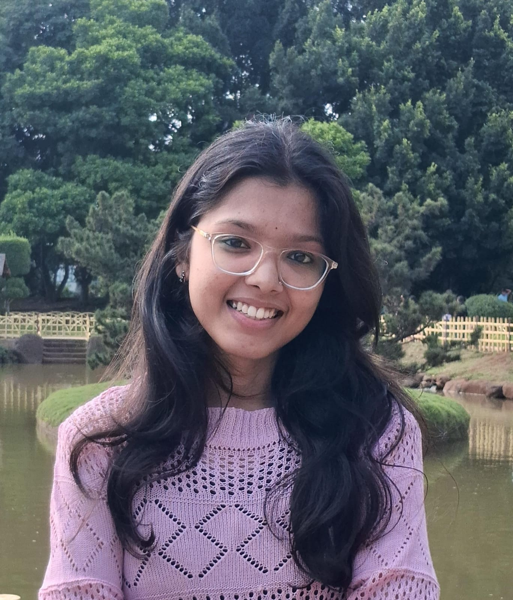

Gauri Sanjay Bhoyar
Email : bhoyargauri717@gmail.com | Contact : 9766951168 | Address : Paratwada,
Maharashtra
Career Objective : Motivated BCA graduate with a strong foundation in Java, C++, and Python,
and hands-on experience in web development through an internship.
Seeking to build a career as a Full Stack
Developer, with a focus on continuous learning and
writing efficient, scalable code.
Education : Bachelor of Computer Applications (BCA)
Shri Shivaji Science College | CGPA: 6.5
12th Standard (HSC)
Gurukul Public School and College, Achalpur | 71%
10th Standard (SSC)
Subodh High School, Achalpur | 78%
Skills :
Programming Languages:
Web Technologies: HTML CSS